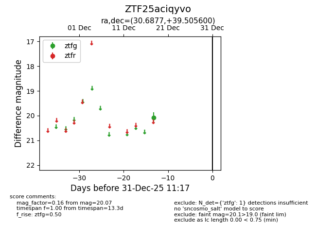
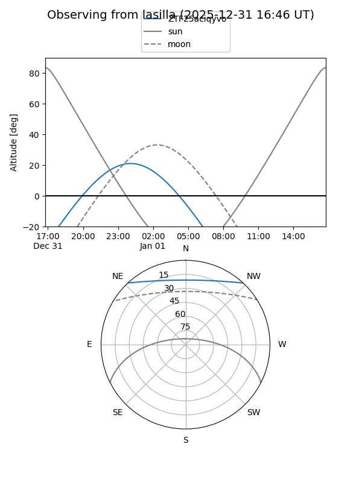
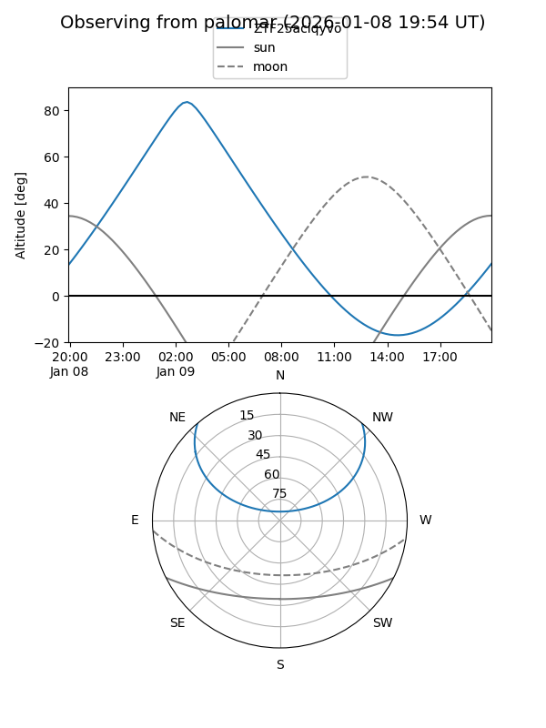

ZTF25aciqyvo
Target ZTF25aciqyvo at 2025-12-18 12:12
Aliases and brokers:
FINK: fink-portal.org/ZTF25aciqyvo
Lasair: lasair-ztf.lsst.ac.uk/objects/ZTF25aciqyvo
ALeRCE: alerce.online/object/ZTF25aciqyvo
alt names
ZTF25aciqyvo (ztf,fink_ztf)
Coordinates:
equatorial (ra, dec) = 30.6877,+39.50560
equatorial (HMS+DMS) = 02:02:45.04,+39:30:20.16
galactic (l, b) = (137.6216,-21.32332)
Photometry
last ztfg=20.07
1 ztfg detections
Lightcurve

Visibility


Additional plots